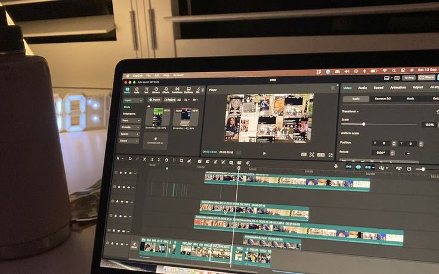

Offline Crush
independent publication · pop culture, music & the internet
selected work
projects, experiments & internet artifactsindependent publication · pop culture, music & the internet

brand world · creative direction · mobile product

social strategy · original graphics · internet culture

campaign concept · experiential · art direction

era concept · visual identity · rollout strategy

brand collaboration · concept · art direction

creative technology · playable indie-web experiment
No projects in that category yet.